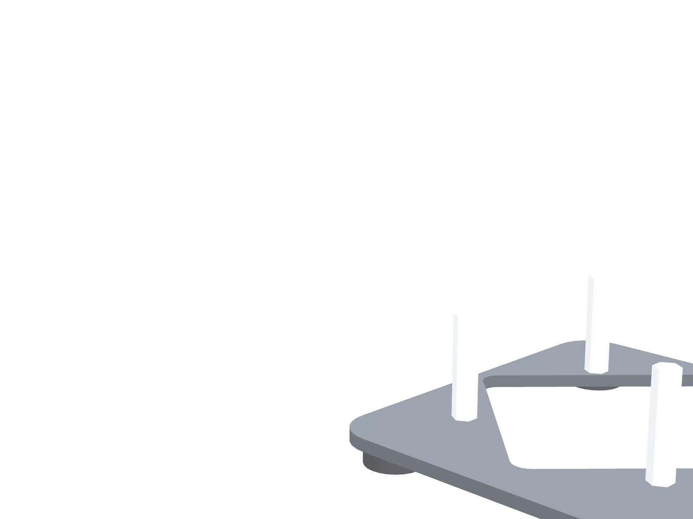
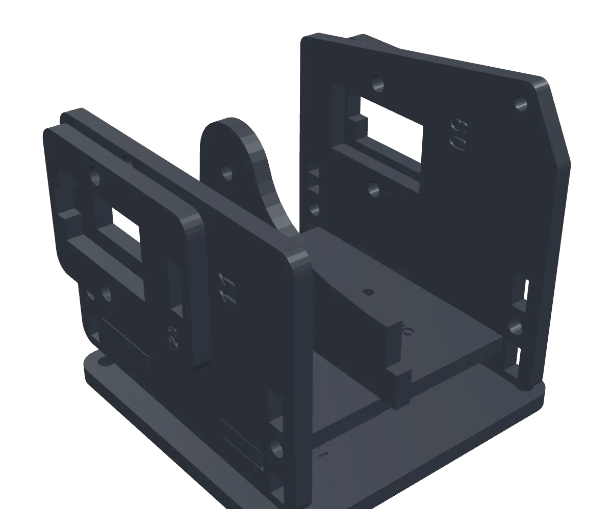
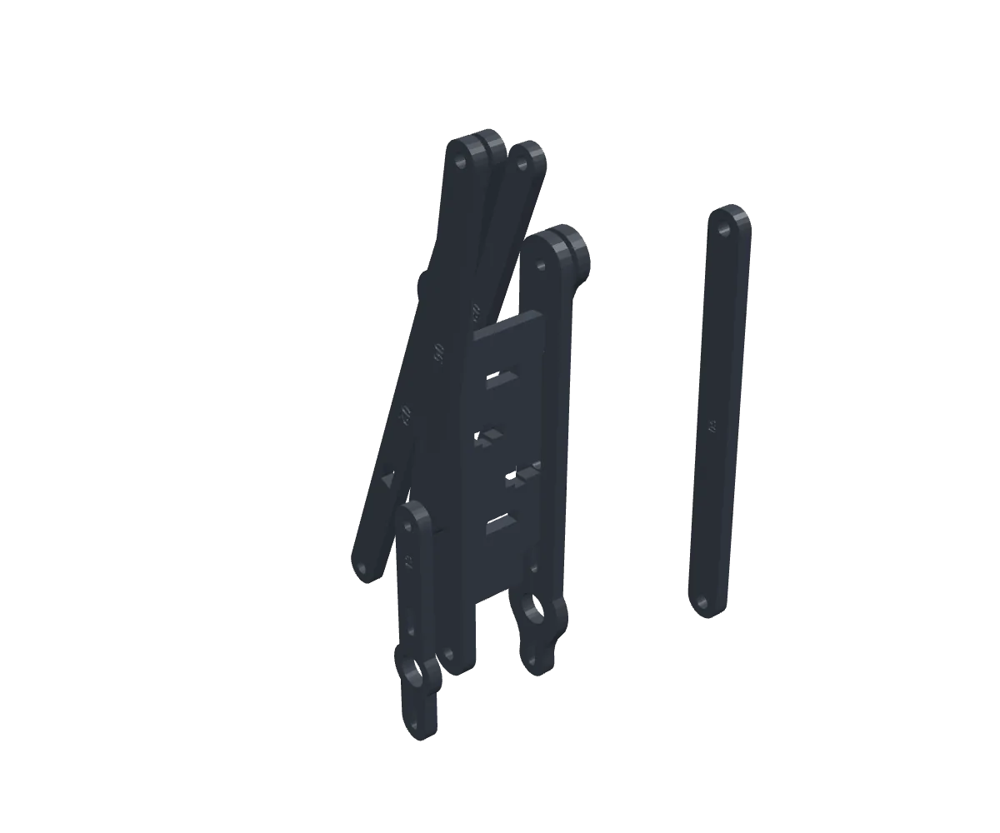
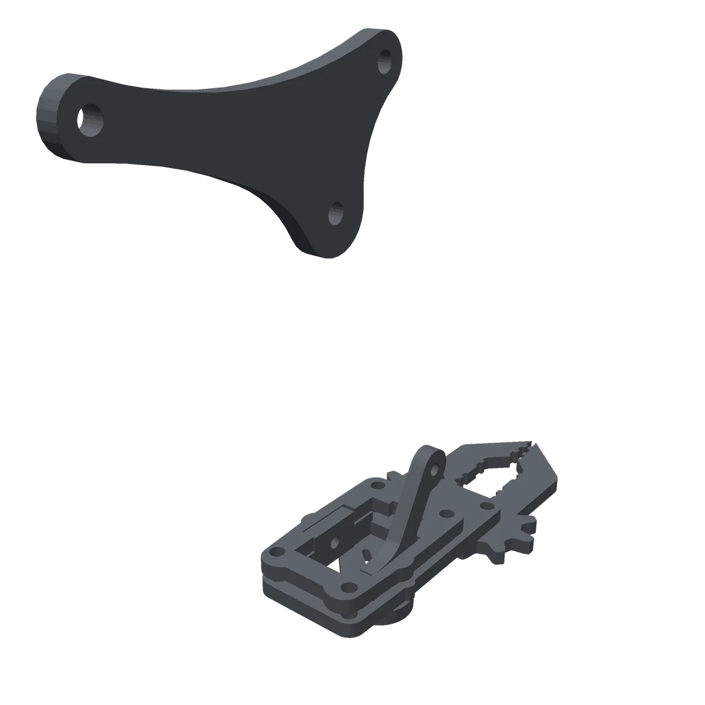

Subconjuntos, na ordem
H1 é a haste de olhal (haste_articulacao_olhal_v4) e H2 é a haste curta (haste_articulacao_curta). A peça 26 (engrenagem acionadora) saiu do projeto: não é impressa nem montada.
| # | Subconjunto | Peças | Servo |
|---|---|---|---|
| 1 | Chassi, base e eixo Yaw | 01, 17, 18, 25, 16, 12 | Servo 1 |
| 2 | Torres centrais | 09, 11, 14, 22, 23 | Servos 2 e 3 |
| 3 | Braço e paralelogramo | 02, 03, 04, 05, 06, 07, 08, 10, 13 | — |
| 4 | Cabeçote e garra | 15, 19, 20, 21, 24, 27, 28, H1, H2 | Servo 4 |
Monte 1 → 2 → 3 → 4: o braço (3) entra nas torres (2) e o cabeçote (4) fecha o antebraço. O modelo montagens/braco_montado_numerado.glb mostra cada peça com o número flutuando acima — use-o para conferir a posição antes de apertar.
1. Chassi, base e Yaw

- Insira 4 porcas M3 na face inferior da 01 e 2 em cada travessa (17, 18).
- Rosqueie os 4 espaçadores M3×24 na 01; fixe as travessas com M3×12.
- Encaixe o Servo 1 no nicho da 12 (eixo para cima) e trave com a 25.
- Horn na face inferior da 16; o estriado do servo entra no horn.
- Calibre o Servo 1 em 90° antes de fechar. Só então encaixe a 12 alinhada para a frente e aperte o M2×4 central.
2. Torres e servos centrais

- Servo 2 na torre 09 (eixo para fora, lado direito).
- Servo 3 na torre 11 (espelhado, eixo para o lado esquerdo).
- Una as torres com a 14 no meio, passando os cabos pelo canal central e dois M3×30 + porcas Nyloc.
- Prenda as torres na 12 com 2 M3×10 por baixo.
- Com os servos 2 e 3 em 90°, encaixe as bielas 22 (ombro) e 23 (cotovelo).
3. Braço e paralelogramo

- 07 no mancal da torre direita: M3×16 + arruela de nylon + Nyloc.
- 05 entre a biela 22 e o furo excêntrico da 07.
- 02 na torre esquerda (M3×16 + arruela) e 03 na biela 23.
- 10 é o coração do paralelogramo: pivô central na 02, traseiro na 03, superior recebendo 13 e 04.
- 06 e 08 no cotovelo (M3×16 + arruelas); 04 na articulação central do antebraço. A 04 nova tem encaixe de 10 mm e mantém os furos a 80 mm.
- Regra das Nyloc: aperte até encostar o anel de náilon, sem prensar o PLA. Teste: com os servos soltos, o braço sobe pela gravidade e a ponta do antebraço fica horizontal em todo o curso.
4. Cabeçote e garra (mecanismo novo)

- Servo 4 no suporte 24; una 24 à base 19 com 2 M3×10.
- Calibre o Servo 4 em 0° (garra fechada) antes de montar o link.
- Encaixe H1 (haste de olhal) no estriado do servo com o parafuso central M2×4. Ela substitui a engrenagem 26 como manivela.
- Ligue H2 (haste curta) do pino da H1 até o furo do dedo móvel 20. O par H1 + H2 abre e fecha a pinça; os dedos 20 e 21 se acertam pelo setor dentado.
- Monte os dedos 20 e 21 nos pivôs da 19 (2 M3×12 + arruelas) e confira o engrenamento simétrico com a pinça fechada.
- Instale a guia 27 e a biela 28 sobre os dedos (2 M3×8). A 27 evita que os dentes desengatem sob carga.
- Feche o conjunto com a 15 (2 M3×10) e prenda o cabeçote nas pontas de 06/08 e no tirante 13 (2 M3×12 + Nyloc).
- Ponha uma gota de graxa de silicone nos dentes de 20/21.
Hardware por etapa
| Etapa | Parafusos | Porcas / arruelas |
|---|---|---|
| 1 | 4× M3×10 · 4× M3×12 · 4× espaçador M3×24 · 4× pé TPU | 8× M3 · 4× arruela nylon |
| 2 | 2× M3×30 · 2× M3×10 · 4× parafuso de aba SG90 | 4× Nyloc |
| 3 | 4× M3×16 · 6× M3×12 | 10× Nyloc · 14× arruela nylon |
| 4 | 4× M3×10 · 2× M3×12 · 2× M3×8 | 6× Nyloc · 6× arruela nylon |
Checagem de interferência
Medido no GLB desta revisão, com booleanas:
- 12 × torres 09/11: no máximo 0,12 mm — encosta, sem folga real.
- H1, H2 e 28 × garra (19, 20, 27): 0 mm³.
- 04 × 10: 0,05 mm de profundidade — tolerância de malha.
- 04 × 02: 0,64 mm de sobreposição na face lateral, ao longo de 33 mm. É o mesmo encaixe que a 04 antiga fazia nas pontas; a versão nova é reta no trecho em que a antiga tinha a curva de 5 mm. Se a peça física não entrar, o offset lateral da 04 precisa de ajuste no CAD.
Conferência final
- Servo 1 em 90° com a mesa alinhada para a frente.
- Servos 2 e 3 em 90° com as bielas encaixadas.
- Paralelogramo: ponta do antebraço horizontal em todo o curso.
- Servo 4 em 0° com H1/H2 montados e a pinça fechada.
- Nenhuma Nyloc prensando o PLA; todas as juntas giram à mão.
- Cabos passando por dentro da 14, sem prender no Yaw.
- Fonte externa 5 V / 5 A no shield (não alimente 4 servos pelo USB).
- Firmware e app:
firmware/braco_4dof/eapp/; pinos e protocolo valem os do firmware 1.3.4.